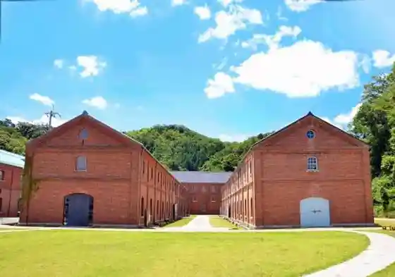

Roadside Station Maizuru Minato Toretore Center
Maizuru, Kyoto · 0773-75-6125
Maizuru Aka Renga Park
Maizuru, Kyoto · 0773-66-1096

Kyoto Maizuru Kaki Koya Tsuru Noboru Maru
Maizuru, Kyoto · 0773-68-2303

Maizuru Tourism Association (Ippan Shadanhojin Kyotofuhokubu Chiiki Renkei Miyako City Ken Shinko Sha Maizuru Chiiki Hombu)
Maizuru, Kyoto · 0773-77-5900

Kan Shima
Maizuru, Kyoto · 0773-75-8600

Go Ro Sukaitawa Go Rogagaku Park
Maizuru, Kyoto · 0773-66-2582
En Takashi Tera
Maizuru, Kyoto · 0773-75-1193
Maizuru Nishi Maizuru Eki Chushajo
Maizuru, Kyoto · 0773-66-1053
Eru Maru Maizuru
Maizuru, Kyoto · 0773-68-1090
Nichi no Ideyu
Maizuru, Kyoto · 0773-75-0366
Maizuru Oya Umi Park
Maizuru, Kyoto · 0773-66-1020
Maizuru Kamaboko Tezukuri Taiken Workshop
Maizuru, Kyoto · 0773-77-5400
Ya Kya Gi Shrine (Omori Shrine)
Maizuru, Kyoto · 0773-62-5462
Kongo In
Maizuru, Kyoto · 0773-62-1180
Kaigun Yukari no Minato Meguri Yuransen
Maizuru, Kyoto · 090-5978-8711
Matsuo Tera
Maizuru, Kyoto · 0773-62-2900
Maizuru Nanajo Kaigan Chushajo
Maizuru, Kyoto · 0773-66-1053
Nohara Beach
Maizuru, Kyoto
Kaijojieitai Kaigun Memorial Museum
Maizuru, Kyoto · 0773-62-2250
Maizuru Ritsu Aka Renga Museum
Maizuru, Kyoto · 0773-66-1095
Maizuru Higashi Maizuru Eki Chushajo
Maizuru, Kyoto · 0773-66-1053
Maizuru Hikiage Memorial Museum
Maizuru, Kyoto · 0773-68-0836
Anju Himezuka
Maizuru, Kyoto · 0773-75-8600
Maizuru Nature Bunka Sono
Maizuru, Kyoto · 0773-66-1049
Maizuru Minamida Hen Chushajo
Maizuru, Kyoto · 0773-66-1053
Maizuru Wan Kaki Koya Bimi Hoshi
Maizuru, Kyoto · 080-6166-1158
Kyoto Maizuru Minato
Maizuru, Kyoto
Jaku Baths
Maizuru, Kyoto · 0773-75-2541
Maizuru Park
Maizuru, Kyoto · 0773-76-7211
Osho Ya Ueno Ie (O Cha to Kashi Togohan Dainingukafe CASA)
Maizuru, Kyoto · 080-9172-7245
Togo Tei
Maizuru, Kyoto · 0773-62-2250
Takao Onsen Hikari Baths
Maizuru, Kyoto · 0773-77-1126
Maizuru Fururu Farm
Maizuru, Kyoto · 0773-60-5111
Tanabe Shiro Museum
Maizuru, Kyoto · 0773-76-7211
Tane Tera
Maizuru, Kyoto · 0773-62-1180
Maizuru Chie Kura
Maizuru, Kyoto · 0773-66-1035
Maizuru Kanko Suteshon
Maizuru, Kyoto · 0773-75-8600
Shiroito Hama Shrine
Maizuru, Kyoto · 0773-62-1845
Kanzaki Beach
Maizuru, Kyoto · 0773-82-5120
Ikeda Shuzo
Maizuru, Kyoto · 0773-82-0005
Ora Forest Park
Maizuru, Kyoto · 0773-66-1023
Maizuru Matsurigoto Memorial Museum
Maizuru, Kyoto · 0773-66-1096
Ryugu Hama Beach
Maizuru, Kyoto
Asayo Shrine
Maizuru, Kyoto · 0773-75-0132
Okawa Shrine
Maizuru, Kyoto · 0773-82-0011
Maizuru Sogo Culture Hall
Maizuru, Kyoto · 0773-64-0880
Maizuru Local History Museum
Maizuru, Kyoto · 0773-75-8836
Aobayama Roku Park
Maizuru, Kyoto · 0773-64-5454